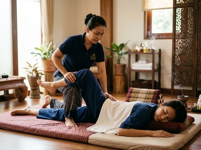

Thai massage in the West End draws on everything that makes this part of Glasgow distinctive: a neighbourhood of grand Victorian terraces, leafy streets, and a community that values both culture and quality of life.
The West End is home to the University of Glasgow and a lively stretch of independent businesses along Byres Road and Great Western Road. Residents include students, academics, healthcare professionals, and long-established families. It is one of the most popular neighbourhoods in the city — and one where people take their wellbeing seriously.
Serendipity Massage Therapy & Wellness is based in Glasgow City Centre at Central Chambers on Hope Street. The studio is easy to reach from the West End. Whether you are heading into town for work or making a specific trip, the journey is short and simple. For many West End residents, a session at Serendipity fits naturally into a city centre visit or works well as a lunchtime or after-work appointment.

The tension that West End life creates is exactly what Serendipity is built to address. Academics and university staff spend long hours at desks. Students carry heavy bags and manage study pressure. Professionals commuting into the city centre build up the same neck and shoulder strain as any office worker. A regular massage session is not a luxury for these clients. It is maintenance, and it works.
You can book your session online and choose a time that fits around your schedule.
Serendipity offers a full range of therapeutic and relaxation treatments. Each one is delivered by a trained therapist using techniques developed by head therapist Jariya Malone.
The Glasgow Subway is the quickest option. Hillhead station on Byres Road is two stops from Buchanan Street. From there, Central Chambers on Hope Street is a five-minute walk. Kelvinbridge station on Great Western Road is equally convenient and links straight into the city loop.
Bus routes along Great Western Road and Sauchiehall Street run throughout the day. The 2, 3, and 77 all serve the area and get you into the city centre in around fifteen to twenty minutes, depending on traffic.
If you prefer to walk or cycle, Byres Road to Hope Street is under thirty minutes on foot. By bike, it is quicker still via the city's cycle network.
Serendipity Massage Therapy & Wellness is a professional team practice — not a sole trader, not a chain. Every therapist is trained to the same standard using techniques developed by Jariya Malone. That means the quality of your session does not depend on who is working that day.
Clients come to Serendipity for results: less neck and shoulder pain, better sleep, improved flexibility, and the kind of reset that skilled therapeutic massage delivers. Many West End clients book regularly. Their Serendipity session becomes a fixture in their monthly routine — not an occasional treat.
If you are ready to feel the difference, book your appointment at Serendipity and choose a treatment that suits you.
Serendipity is at Central Chambers, Floor 1, Suite 50, on Hope Street in Glasgow City Centre. From Byres Road or Great Western Road, the journey takes around fifteen to twenty minutes by bus or subway. Hillhead and Kelvinbridge stations both leave you within easy walking distance of the studio.
The Glasgow Subway is the simplest option. Hillhead station on Byres Road connects to Buchanan Street in two stops, and Hope Street is a five-minute walk from there. Kelvinbridge station on Great Western Road is equally convenient. Bus routes including the 2, 3, and 77 also run regularly between the West End and the city centre.
Same-day availability depends on the schedule, so it is always worth checking. You can view current availability and book directly through the online booking page. Booking ahead by a day or two gives you the best choice of times and therapists.
Traditional Thai massage works well for desk workers and students. It uses acupressure and assisted stretching to release tension in the neck, shoulders, and upper back — the areas that suffer most from long periods of sitting. Thai oil massage is another strong option. It uses flowing strokes and targeted pressure to ease chronic muscle tension and support genuine relaxation. Your therapist can help you choose when you arrive.
Serendipity serves clients from across Glasgow. The West End is one of the best-connected areas for reaching the Hope Street studio. The treatments address the specific pressures West End life creates: desk tension, study-related stress, and the physical fatigue of an active urban lifestyle. The team is experienced with a wide range of clients — from first-timers to those with ongoing therapeutic needs.